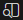
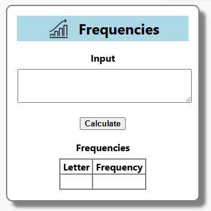

A view in a browser app is ultimately just HTML + CSS.
This app will use just one file for each (without compontents).
VSCode has a nice preview button for HTML files,
that renders the HTML with CSS styling while you edit.
Teaching HTML and CSS is beyond the scope of this tutorial,
as there are already plenty of great online resources for that.
You can just copy-paste the code below into the existing files.
File: index.html
Replace the contents of the file
./web/index.html with the following HTML:
<!DOCTYPE html>
<html lang="en-GB">
<head>
<meta charset="utf-8" />
<meta name="viewport" content="width=device-width, initial-scale=1.0">
<title>Counter</title>
<link rel="stylesheet" href="default.css" type="text/css" />
<script src="Script/main.js"></script>
</head>
<body>
<table id="formTable">
<tr>
<td class="title">
<img id="logoImage" src="logo.png" height="40"></img>
<span id="titleMessage"> Frequencies</span>
</td>
</tr>
<tr>
<td>
<div class="subTitle">Input</div>
<textarea id="inputTextArea"></textarea>
</td>
</tr>
<tr>
<td>
<button id="calculateButton">Calculate</button>
</td>
</tr>
<tr>
<td>
<div class="subTitle">Frequencies</div>
<table id="frequenciesTable">
<tr>
<th>Letter</th>
<th>Frequency</th>
</tr>
<!-- Rows will be replaced by the app -->
<tr>
<td> </td>
<td> </td>
</tr>
</table>
</td>
</tr>
</table>
</body>
</html>
File: default.css
Replace the contents of the file
./web/default.css with the following CSS:
body {
font-family: system-ui;
font-size: medium;
background-color: #F8F8F8;
}
#formTable {
width: 320px;
margin-left: auto;
margin-right: auto;
background-color: white;
border: solid gray;
border-width: 2px;
border-spacing: 16px;
border-radius: 10px;
text-align: center;
box-shadow: 10px 10px 5px grey;
}
.title {
font-size: X-Large;
font-weight: bold;
background-color: lightblue;
margin-top: 0px;
margin-bottom: 0px;
/* Vertically center items */
display: flex;
align-items: center;
justify-content: center;
}
.subTitle {
font-weight: bold;
margin-bottom: 8px;
}
#inputTextArea {
width: 100%;
height: 50px;
}
#calculateButton {
font-weight: bold;
}
#frequenciesTable {
margin-left: auto;
margin-right: auto;
border-collapse: collapse;
}
#frequenciesTable th, #frequenciesTable td {
border: 2px solid grey;
padding-left: 4px;
padding-right: 4px;
}
We also want a new icon and logo for the app.
You can download their files by clicking on the links:
favicon.ico and
logo.png.
Then put them in the
./web folder of the app project.
The HTML preview in VSCode can be activated with this button on the top right

when the file
index.html is open. It should now look like this:

Now we're ready to combine using the model and view with the app class.
{kind=link}